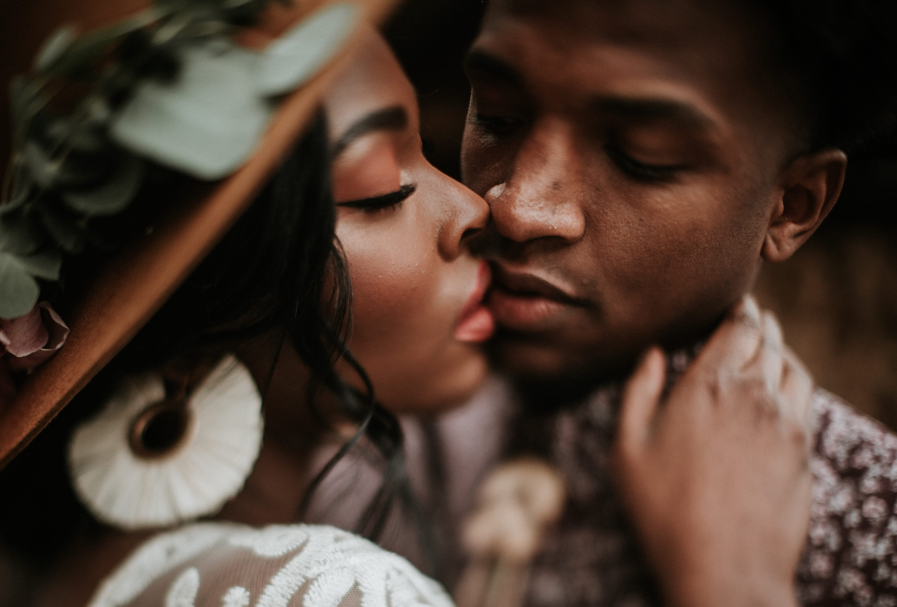

Our mission is to make every wedding memorable in the best way we know how,
that is by providing the newlyweds the best wear and apparel money can buy at an affordable price.
We are a group of 8 all united by our love and passion for making the most memorable day in every couple's day even more special.
We started as a general decoration company a few ago but we soon reliased that our passion was about wedding days and everything
that goes with it hence we decided to concentrate our energy and time to wedding decoration exclusively.
After many years of providing our service as a wedding decoration company, 5 years ago we turned our attention to an even more
important aspect of the wedding, dressing the newlyweds along with the bridemaids and bestmen.
Scroll down to see what some of our clients had to say about our services
We offer the following services directly or indirectly through our vast network of like minded companies
This testimony is from the Charles' couple. 3 weeks ago it was our wedding day and one of our friends referred us
to the wedding boutique and I got to say I was impressed by the level of professionalism with which they offer their
services, we sent an email out with our requirements and they replied the sameday and set up an appointment within
a week and when we met they had reviewed our requirements and came up with options for venues, catring services,
dressing and even things we didn't include in our initial request for service. They promised to make our day more
special and memorable and they did. I would recommend their services to anyone without hesitating for a second.
from TWB: thanks alot Mr. and Mrs. Charles glad we were able to make your special day grander and memeorable.
 I got applaud the quality of services we received from the Wedding Boutique especially given that they only had a few
weeks to put a plan together and execute it. Something that many companies in the same industry could not do with
months of preparation.
from TWB: thank you so much sir Gedeon, TWB vowed to go to all extremes in order to make every wedding a success.